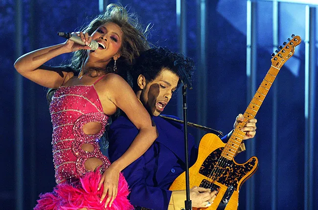

Born on September 4th, 1981. Beyonce Knowles was a timid kid growing up. She was enrolled in a dance program with her sister, Solange Knowles, and her dance teacger overheard her singing and signed beyonce for a singing competition. After performing, little Beyonce fell in love with the stage. Only being 16 years old, Beyonce and her friends were in a singing group named "Destinys Child", managed bt her father. After massive success and grammy praise, Beyonce declared that she was going solo and debuted in 2003 with a song called "Crazy in Love" featuring Jay Z. She later released her first solo album called "Dangerously in Love" in 2003 clamining her solo spot in the music industry.
While Beyonce has many classic albums, there are three that changed her career. Her self-titled album released on December 13, 2013 took the world by storm. With no prior announcement or proper rollout, Beyonce released her album on a friday which was unheard of. The regular album cycle was relased on a tuesday. She did "change the world with that digital drop," as she claims in her song "Flawless". Not only was the release a suprise, but it was also a visual album with music videos for each track. In 2016, Beyonce released her highly acclaimed sixth album "Lemonade" which discussed the topic of her husband's, Jay Z, infedility. The album broke records and the first single was announced the day before her superbowl performers. Apple music nammed the album the 10th best of all time in 2024. Fastforwarding to 2022, Her dance album "Renaissance" became a shift in the music world. The 16 tracked album led to a tour that many felt safe and seen in. With features such as Tems, Grace Jones, and Beam; the message of self love and positive filled the summer of 2023.
She is an owner of many businesses. She has recently ventured into the haircare with "Cecred" which has one a plethra of awards nad released "Noir" a perfum based on her film "Renaissance". She is also a part of Roc Nation which is owned by her husband. She is also a model, actress, and spokeswoman for companies such as Lo'real and Dolce and Gabanna.
Being the most awarded person person in grammy history. Beyonce beat the previous most awarded Micheal Jackson in 2023 with her wins for her 2022 album "Renaissance". Leaving her with a total of 32 Grammys.
